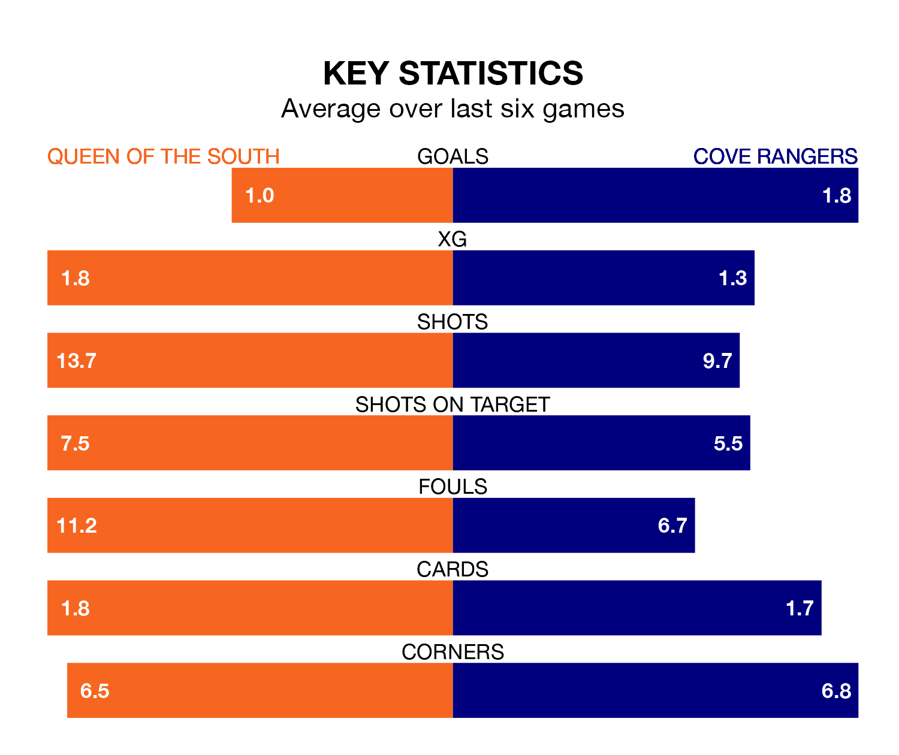

Cove Rangers face a challenge to maintain their high-scoring form away against a tight Queen of the South defence on Saturday.
With 55 goals in 34 games, Cove are the fourth-highest scorers in League One ahead of the 3pm kick-off at Palmerston Park.
They face a Doonhamers side who have scored 42 in 34 matches, but conceded only 50 goals, putting them third among the league's tightest defences – only Falkirk and Hamilton Academical have conceded fewer goals.
In Rumarn Burrell, Cove have one of the league's most on-form strikers so far this season. He has notched 21 goals in 33 appearances, to sit second in the scoring charts.
His goal rate of one every 134 minutes is quicker than that of Gavin Reilly, Queen of the South's top scorer with a goal every 228 minutes, and a total of nine goals in 28 games.
In the last 10 years, Queen of the South and Cove have played each other on six occasions. Queen of the South won three of them, Cove two, and they drew once.
On average, the Doonhamers scored 1.2 goals and the Wee Rangers 1.2 in those matches.
Their last meeting was on January 27, when Queen of the South won 2-0 away.
The Doonhamers are in mixed form in League One, with two wins and two draws from their last six games.
With two wins and four losses over that period, Rangers's form is slightly worse – they have taken six points from 18, compared to the hosts' eight.
Queen of the South are seventh in the table after 34 games, of which they have won 10 and drawn eight, earning 38 points.
The Wee Rangers are two places ahead of Queen of the South in fifth, with 13 wins and seven draws putting them on 46 points.
Queen of the South's last match was on April 20, a 0-0 draw against Stirling Albion.
Cove lost 3-2 against Alloa Athletic last time out, also on Saturday, with Burrell and Mitchel Megginson on the scoresheet.
Updated: 07:59 (UTC), 26/04/24